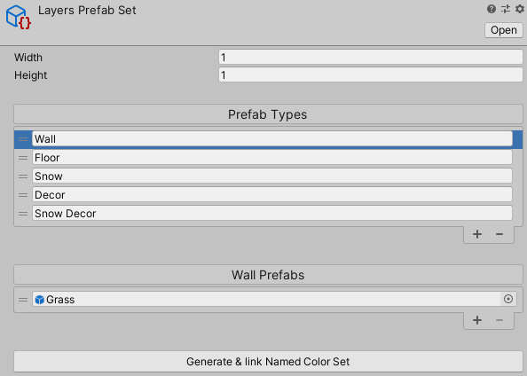
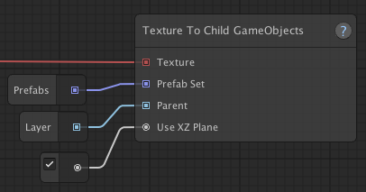

Using prefabs instead of tilemaps
There are two methods for placing game objects from prefabs. You can either use the rule tile system and attach a prefab to each rule tile. You can read about it on the "Tips for rule tiles" page.
The other method is by using a Prefab Set, which will explained in the following sections.
Whether you're using prefabs or tilemaps, Map Graph works mostly the same and uses mostly the same nodes.
If you've followed the "Creating your first map generator" tutorials, you'll be familiar with the things you need to generate tilemaps, namely a Named Color Set, a Tileset and inside of your graph, you'll need one or more Texture To Tilemap nodes.
If you want to use prefabs instead, you can simply replace the Tileset with a Prefab Set and the Texture To Tilemap nodes can be replaced with Texture To GameObjects nodes.
Prefab Sets
Prefab Sets work pretty much exactly the same as the Tilesets. The only differences being, that you need to assign prefabs to the different types and that you need to define a width and height for your prefabs. The width and height will basically be used as the cell size of the grid that the prefabs are placed on.

Texture To GameObjects node
The Texture To GameObjects node is very similar to the Texture To Tilemap node, but instead of a Tileset and a tilemap, it needs
a Prefab Set and a parent GameObject. The parent game GameObject, is the object in a scene that will contain
the GameObjects generated from the prefabs.
Be aware, that any existing child GameObjects of the parent will be destroyed each time the graph is processed. So it should be an empty object only used for this particular purpose.
This node also has the "Use XZ Plane" option. If this is enabled, the objects will be placed onto the XZ plane instead of the XY plane. You'll probably want to use the XZ plane when creating a game that has 3D gameplay mechanics, whereas the XY might be more appropriate for a game with 2D gameplay.

Creating multiple layers
If you want to use prefabs to create a 3D game, you'll likely need more than one layer.
To create multiple layers you can use the same strategy, you would when adding multiple layers with 2D tilemaps, as is described in the "Object placement" tutorial.
Instead of having a Texture To Tilemap Data node for each layer, you'll want to use a Texture To Child GameObjects for each layer. And instead of setting the "Order in Layer" variable on each tilemap component, you adjust the position of the parent game object to reflect the correct layer position. For example, if you have an prefab height of 1, layer one might be on Y = 0, layer two on Y = 1, layer three on Y = 2, etc.
Examples
If you'd like to see an example of using prefabs instead of tilemaps, please take a look at the Sample Project.
"3D Prefabs" is a very basic example of using prefabs. "3D Layers" is a more elaborate example, with different types of tiles and multiple layers.